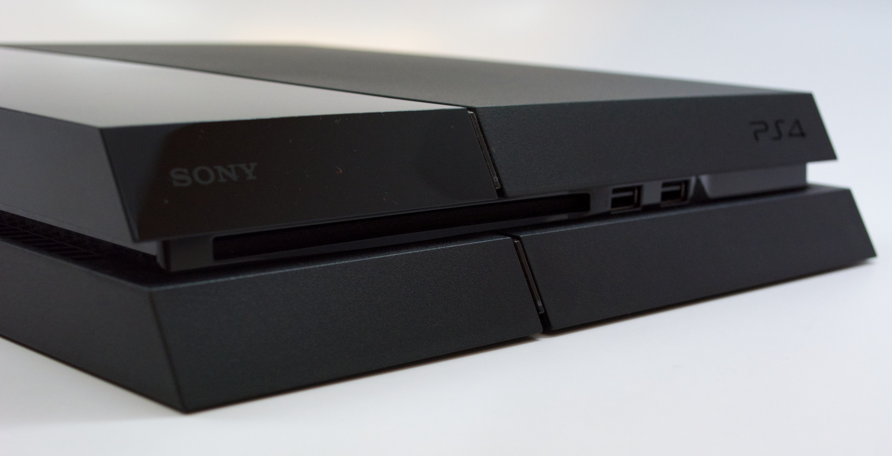
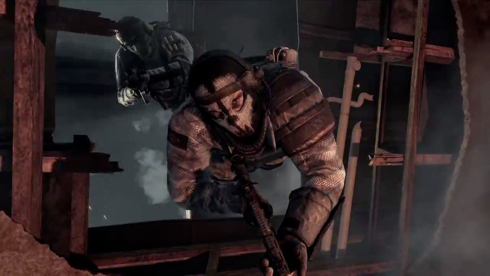

News
2 mei 2016
Eksistensinya memang tak bisa lagi dibantah. Alih-alih seperti konsol generasi sebelumnya yang bertahan selama satu generasi dengan hanya varian bentuk lebih ramping, generasi ini tampaknya akan disisipi versi baru dengan performa yang berbeda pula.

News
1 mei 2016
Tak ada kejutan di sini. Hampir semua gamer di seluruh dunia tampaknya sudah tahu dan mengerti bahwa pergantian tahun berarti kehadiran sebuah seri teranyar Call of Duty untuk akhir tahun.
News
30 April 2016
Berbeda dengan apa yang kita kenal soal konsep konsol selama belasan tahun terakhir ini, kemajuan teknologi yang begitu pesat di industri game membuat produsen tak punya banyak pilihan.